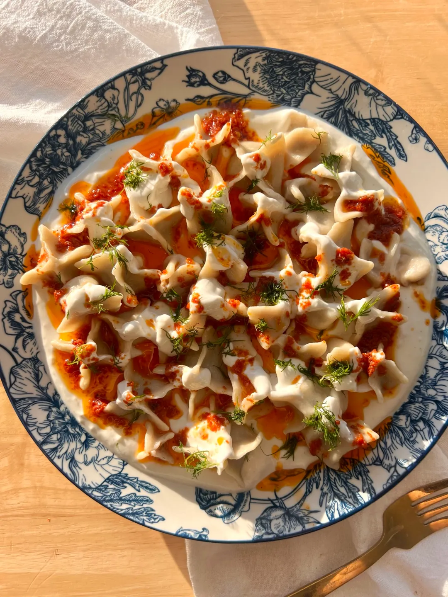
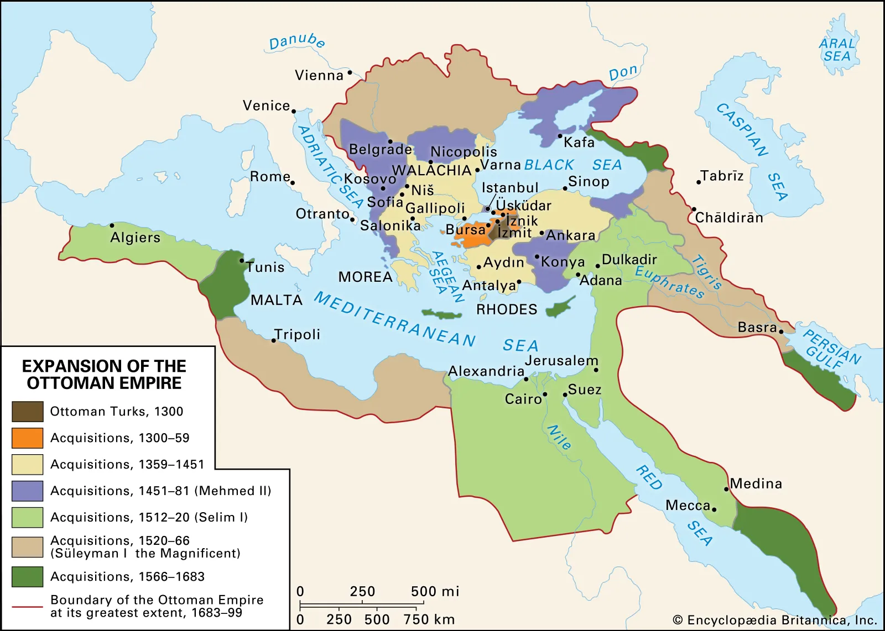

Turkish Foods
History
Turkish food history is a rich blend of Central Asian nomadic traditions, Middle Eastern spices and Mediterranean ingredients, shaped by the Ottoman Empire.
- Meat and dairy: early Turkic tribes relied on animal husbandry, making mutton, yogurt and dried meats staples.
- Portable foods: sucuk, pastırma and mantı all come from that nomadic era.
- Grains: flatbreads and simple dough formed the base of the diet.

Timeline
Four periods shaped what is served in Turkey today.
- Central Asian nomadic era (before the 11th century)
- Seljuk Empire (11th–13th century)
- Ottoman Empire (1299–1922)
- Republican and modern era (1923–present)
